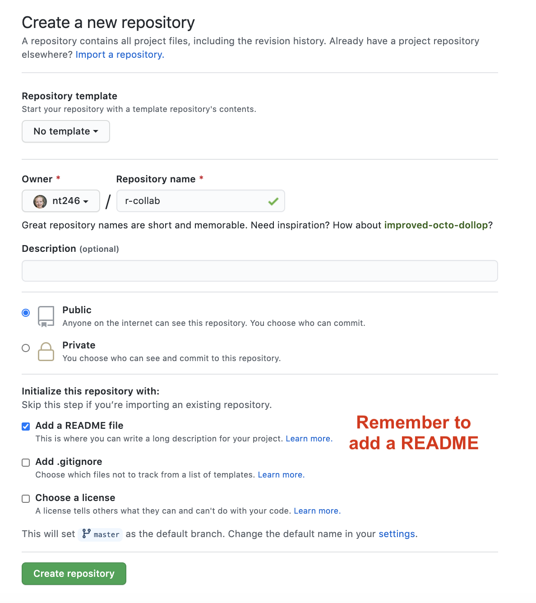
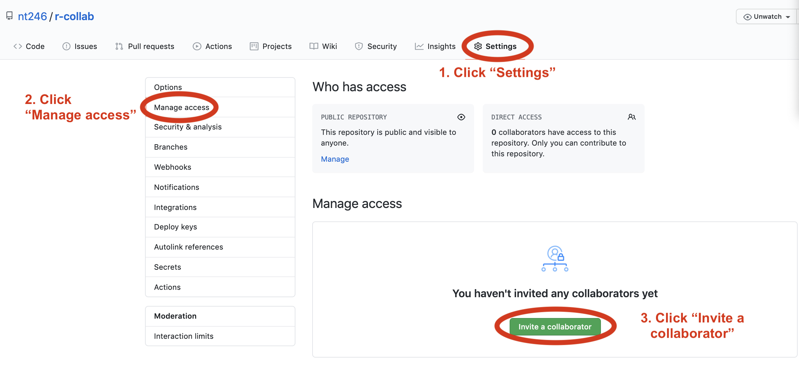
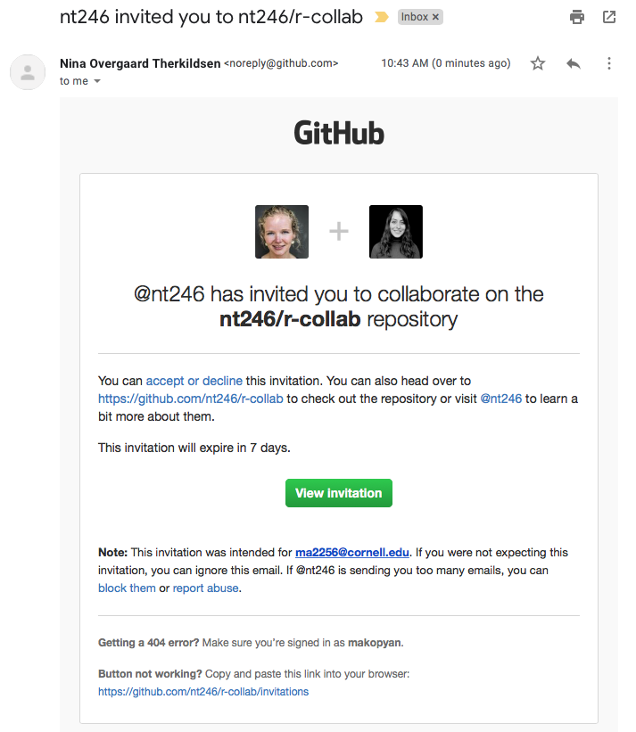
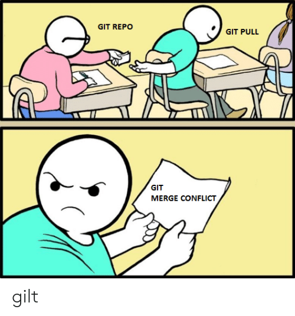

Lesson 4: Collaborating with GitHub
Readings
There are no required readings for today’s lesson, but if you’re keen to learn more, check out the other resources listed under Lesson 3
Announcements
- Homework 1 is due at 10pm tonight (push it to your course GitHub repo)
- Future homework assignments will be due on Mondays (i.e. the next homework will be due Monday 10/5)
- During lecture, please use Slack instead of the Zoom chat to make comments or ask questions. It’s wonderful to see you helping to answer each others’ questions. To keep things organized, let’s try to use threads for replies
- We will send out a short evaluation form after today’s class to briefly check in on how the course is going for you and whether we should make any adjustments
- Reminder: hacky hours 12:20-2:15pm on Fridays
Learning objectives
By the end of this class you will be able to:
- Create a new repository in your personal Github account
- Give repo privileges to a collaborator
- Collaborate on a repo with your partner
- Describe how to avoid merge conflicts
- Resolve merge conflicts when they arise
Acknowledgements: Today’s lecture is adapted from the excellent R for Excel users course by Julia Stewart Lowndes and Allison Horst.
Collaborating with GitHub
We’re going to collaborate with a partner to set up a new repository. First sit back and watch as we demo, then you will get sent to a breakout room with a partner and get to practice.
Create repo
Partner 1
Decide who will be Partner 1 and who will be Partner 2. Partner 1 will create a new repository in their personal Github account.
Let’s name it r-collab.

Clone to a new R Project
Partner 1
Now let’s have Partner 1 clone their new repository to their local computer. We’ll do this through RStudio like we did before, making sure to select “Open in a new Session”.

Opening this Project in a new Session opens up a new world of awesomeness from RStudio. Having different RStudio project sessions allows you to keep your work separate and organized. So you can collaborate with this collaborator on this repository while also working on your other repository from this morning. I tend to have a lot of projects going at one time:

Have a look in your git tab.
When you first clone a repo through RStudio, RStudio will add an .Rproj file to your repo. And if you didn’t add a .gitignore file when you originally created the repo on GitHub.com, RStudio will also add this for you. So, Partner 1, let’s go ahead and sync this back to GitHub.com.
Remember:

Let’s confirm that this was synced by looking at GitHub.com again. You may have to refresh the page, but you should see this commit where you added the .Rproj file.
DEMO: Let’s get Partner 2 involved [you can skip this step when working by yourselves in breakout rooms]
Question: Can Partner 2 clone Partner 1’s repo? Let’s try!
Now it’s Partner 2’s turn! Partner 2, clone this repository following the same steps that Partner 1 just performed. When you clone it, RStudio should not create any new files — why? Partner 1 already created and pushed the .Rproj and .gitignore files so they already exist in the repo.
So Partner 2 can clone someone else’s repo. But can they push changes?
Let’s have Partner 2 make some edits to the README file. We will edit this file and illustrate how GitHub tracks files that have been modified (to complement seeing how it tracks files that have been added).
In the README, you can write something like:
This repo is for our collaborative project
When I save this, notice how it shows up in my Git tab. It has a blue “M”: GitHub is already tracking this file, and tracking it line-by-line, so it knows that something is different: it’s Modified with an M.
And now let’s sync back to GitHub: Pull, Stage, Commit, Push
ERROR! We can’t push changes to a repo we’re not a collaborator on. That makes good sense - we don’t want random people to be able to make changes to our files!
Give your collaborator (Partner 2) privileges
Partner 1 and 2
Now back on GitHub.com, Partner 1, go into Settings > Collaborators > enter Partner 2’s (your collaborator’s) username.

Partner 2 then needs to check their email and accept as a collaborator. Notice that your collaborator has Push access to the repository:

Edit the README file again and push changes
Partner 2
Now that Partner 2 has been added as a collaborator, try pushing your changes to the README.md file again. You may have to make another edit to the README.md file and save before it shows up in the Git tab for staging.
Then Pull, Stage, Commit, Push
Now we should be able to push changes. We can see the changes on GitHub.com, where we can also click to view all the commits and see commits logged from both Partner 1 and 2!
Activity
Work through the steps in the demo above with your partner to create a collaborative repo, clone it to both of your local machines, and make sure you both can push changes.
State of the Repository
OK, so where do things stand right now? GitHub.com has the most recent versions of all the repository’s files. Partner 2 also has these most recent versions locally. How about Partner 1?
Partner 1 does not have the most recent versions of everything on their computer.
Question: How can we change that? Or how could we even check?
Answer: PULL.
Let’s have Partner 1 go back to RStudio and Pull. If their files aren’t up-to-date, this will pull the most recent versions to their local computer. And if they already did have the most recent versions? Well, pulling doesn’t cost anything (other than an internet connection), so if everything is up-to-date, pulling is fine too.
I recommend pulling every time you come back to a collaborative repository. Whether you haven’t opened RStudio in a month or you’ve just been away for a lunch break, pull. It might not be necessary, but it can save a lot of heartache later.
Merge conflicts
What kind of heartache are we talking about? Merge conflicts.
Within a file, GitHub tracks changes line-by-line. So you can also have collaborators working on different lines within the same file and GitHub will be able to weave those changes into each other – that’s it’s job!
It’s when you have collaborators working on the same lines within the same file that you can have merge conflicts. This is when there is a conflict within the same line so that GitHub can’t merge automatically. They need a human to help decide what information to keep (which is good because you don’t want GitHub to decide for you). Merge conflicts can be frustrating, but like R’s error messages, they are actually trying to help you.
So let’s experience this together: we will create and solve a merge conflict. Stop and watch me demo how to create and solve a merge conflict with my Partner 2, and then you will do the same with your partner. Here’s what I am going to do:
Pull
Partners 1 and 2
Both partners go to RStudio and pull so you have the most recent versions of all your files.
Create a conflict
Partners 1 and 2
Now, Partners 1 and 2, both go to the README.md, and on Line 4, write something, anything. Save the README.
I’m not going to give any examples because when you do this I want to be sure that both Partners to write something different. Save the README.
Sync
Partner 2
OK. Now, let’s have Partner 2 sync: pull, stage, commit, push. Just like normal.
Sync attempts & fixes
Partner 1
Now, let’s have Partner 1 (me) try.
When I try to Pull, I get the first error we will see today: “Your local changes to README.md would be overwritten by merge”. GitHub is telling me that it knows I’ve modified my README, but since I haven’t staged and committed them, it can’t do its job and merge my conflicts with whatever is different about the version from GitHub.com.
This is good: the alternative would be GitHub deciding which one to keep and it’s better that we have that kind of control and decision making.

GitHub provides some guidance: either commit this work first, or “stash it”, which you can interpret that as moving the README temporarily to another folder somewhere outside of this GitHub repository so that you can successfully pull and then decide your next steps.
Let’s follow their advice and have Partner 1 commit. Great. Now let’s try pulling again.
New error: “Merge conflict in README…fix conflicts and then commit the result”.
So this error is different from the previous: GitHub knows what has changed line-by-line in my file here, and it knows what has changed line-by-line in the version on GitHub.com. And it knows there is a conflict between them. So it’s asking me to now compare these changes, choose a preference, and commit.

We will again follow GitHub’s advice to fix the conflicts. Let’s close this window and inspect. Did you notice two other things that happened along with this message?
First, in the Git tab, next to the README listing there are orange Us; this means that there is an unresolved conflict. It means my file is not staged with a check anymore because modifications have occurred to the file since it has been staged.
Second, the README file itself changed; there is new text and symbols. (We got a preview in the diff pane also).
<<<<<<< HEAD
Julie is collaborating on this README.
=======
**Allison is adding text here.**
>>>>>>> 05a189b23372f0bdb5b42630f8cb318003cee19bIn this example, Partner 1 is Julie and Partner 2 is Allison. GitHub is displaying the line that Julie wrote and the line Allison. wrote separated by =======. These are the two choices that I (Partner 1) has to decide between, which one do you want to keep? Where where does this decision start and end? The lines are bounded by <<<<<<<HEAD and >>>>>>>long commit identifier.
So, to resolve this merge conflict, Partner 1 has to chose which one to keep. And I tell GitHub my choice by deleting everything in this bundle of tex except the line they want. So, Partner 1 will delete the <<<<<<HEAD, =====, >>>>long commit identifier and either Julie or Allison’s line that I don’t want to keep.
I’ll do this, and then commit again. In this example, we’ve kept Allison’s line:

Then I’ll stage, and write a commit message. I often write “resolving merge conflict” or something similar. When I stage the file, notice how now my edits look like a simple line replacement (compare with the image above before it was re-staged):

And we’re done! We can inspect on GitHub.com that I am the most recent contributor to this repository. And if we look in the commit history we will see both Allison and my original commits, along with our merge conflict fix.
Activity
Create a merge conflict with your partner, following the steps that we just did in the demo above. Practice different approaches to solving errors: for example, try stashing instead of committing.
How do you avoid merge conflicts?
Merge conflicts can occur when you collaborate with others — I find most often it is collaborating with ME from a different computer. They will happen, but you can minimize them by getting into good habits.
To minimize merge conflicts, pull often so that you are aware of anything that is different, and deal with it early. Similarly, commit and push often so that your contributions do not become too unweildly for yourself or others later on.
Also, talk with your collaborators. Are they working on the exact same file right now that you need to be? If so, coordinate with them (in person, GChat, Slack, email). For example: “I’m working on X part and will push my changes before my meeting — then you can work on it and I’ll pull when I’m back”. Also, if you find yourself always working on the exact same file, you could consider breaking it into different files to minimize problems.
But merge conflicts will occur and some of them will be heartbreaking and demoralizing. They happen to me when I collaborate with myself between my work computer and laptop. We demoed small conflicts with just one file, but they can occur across many files, particularly when your code is generating figures, scripts, or HTML files. Sometimes the best approach is the burn it all down method, where you delete your local copy of the repo and re-clone.
Protect yourself by pulling and syncing often!
Merging changes
Merge conflicts only happen when changes have been made to the same line in the same file. To clearly illustrate this, we will now demo a series of different outcomes we can experience when two people are working on the same repo and end up making changes in parallel without pushing in sequence (i.e. partners end up with different versions on their local computers that need to be reconciled in the remote repo).
Watch first, then you’ll get a chance to work through the steps for yourselves.
When you and your collaborator have worked on separate files
Let’s have Partner 2 create a new RMarkdown file and name it analysis.Rmd. Here’s what you will do:
- Pull! (in case Partner 1 has pushed something in the meantime)
- Create a new RMarkdown file and name it
analysis.Rmd. Choose Github Document as the output format (find it under the “From Template” option on the left). - Change the title inside the Rmd, call it “Our Collaborative Analysis”
- Knit
- Save and sync your .Rmd and your .md files
- (pull, stage, commit, push)
Now, let’s have Partner 1 edit the README file. Then try to pull. Then stage, commit, push.
The versions should merge smoothly because there is no overlap between the changes made by Partner 1 and 2.
Summary:
Remote: A--B--C
Local before 'git pull': A--B--(uncommitted changes)
Local after 'git pull': A--B--C--(uncommitted changes)When you have worked in different parts of the same file
Now you both have a copy of the analysis.Rmd file. Partner 2 can add a new header just under the setup code chunk (e.g. line 12), then pull, stage, commit, push.
Now Partner 1 can add a note under the ## Including Plots header around line 22. Then try to pull. Then commit, and pull, stage, push.
Again, this time the versions should merge smoothly because we were working in different parts of the document.
When you have worked on the same part of a file
This is where problems arise. Now Partner 2 makes a change to the first code chunk. Change summary(cars) to a different function, e.g. dim(cars). Then pull, stage, commit, push
Partner 1 should not pull yet, but instead also make a change to that first code chunk, so change summary(cars), e.g. to nrow(cars). Then try to pull (will be rejected). Then stage, commit and pull.
As we have seen earlier, this will result in a merge conflict. Resolve as described in the Merge Conflicts Section.

Let’s look further into what happens during merge conflicts.
This section is borrowed from HappyGitwithR. Check out this awesome resource for more details.
You want to pull changes from upstream, but you have done some new work locally since the last time you pulled (and someone else has pushed changes to the remote repo since then). This often comes up because what you actually want to do is push, but Git won’t let you until you first incorporate the upstream changes.
State of repo on GitHub:
A--B--CState of repo on your local computer:
A--B--DYou can’t cause some sort of merge to happen to the GitHub copy when you push.
Instead, you’ve got pull the commit C and somehow integrate it into your D-containing history. Then you will be able to push again.
What can we learn from this?
1. She who pushes first wins!
You may have noticed that you – the author of D – are faffing around with Git more than the person who committed and pushed C, i.e. your collaborator.
There is a lesson to be learned here!
If you had pushed D first, you’d be relaxing and they’d be figuring out how to integrate C into their history in order to push. So push your work often. Don’t go dark and work “offline” for long stretches of time.
Obviously, you should push work to master because it’s “ready” to share (or at least “ready enough”), not to avoid Git merges.
There is a truly legitimate point here: It is better for the overall health of a project to be committing, pushing, and integrating more often, not less. This does not eliminate the need to integrate different lines of work, but it makes each integration smaller, less burdensome, and less prone to error.
2. Stay in touch
Another take away is this: the sooner you know about C, the better. Pull (or fetch) often.
Consider that it might be easier to integrate C into your work D sooner rather than later. Sometimes this is not true, but more often it is.
In general, it pays off to be proactively aware of what others are doing (e.g. to pull or fetch often) than to always be in reactive mode, learning about your collaborator’s work only when your push is rejected.
3. When you get more experienced, you may want to use branches
Your early experiences collaborating with others and yourself in master will give you a visceral understanding of why most Git users eventually start to use branches.
Branches afford explicit workflows for integrating different lines of work on your own terms. This is much nicer than trying to do a tricky merge or rebase in a frustrated panic, because you need to push your work to GitHub at the end of the day. But for now, we will focus on more basic GitHub usage and you can learn about branches later on.
Examining the history of a repo
Commit History
Go back to Github.com and have a look at the commit history of your collaborative repo. You’ll see that the number of commits for the repo has increased, let’s have a look. You can see the history of what both Partner 1 and 2 have done.
Blame
Now let’s look at a single file, starting with the README file. We’ve explored the “History” option in the top-right of the file, but there is also a “Blame” option. Let’s look now. Blame shows you line-by-line who authored the most recent version of the file you see. Despite the negative-sounding name of this function, this is actually super useful if you’re trying to understand the logic of any section in your document; you know who to ask for questions or attribute credit to.